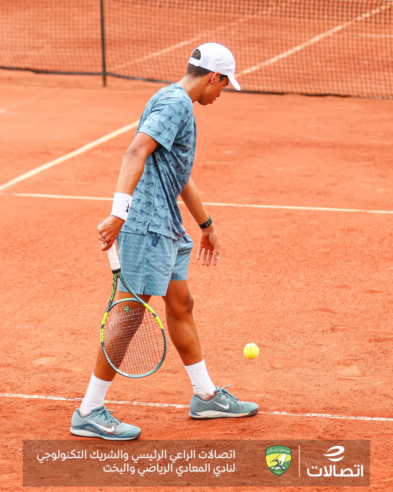
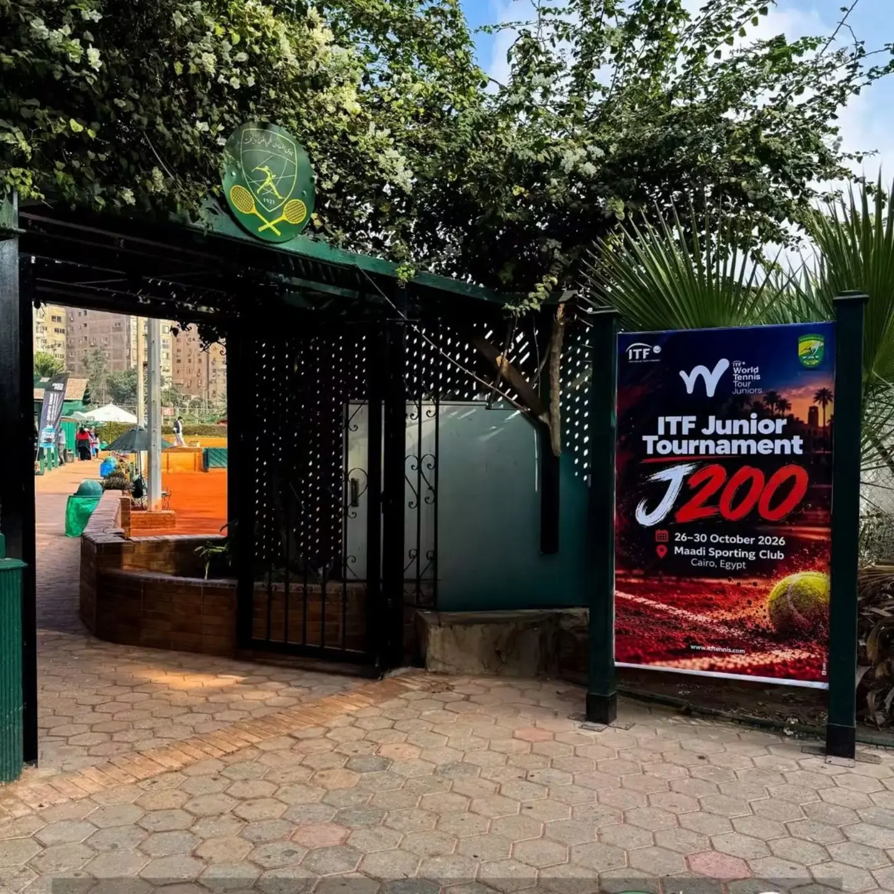
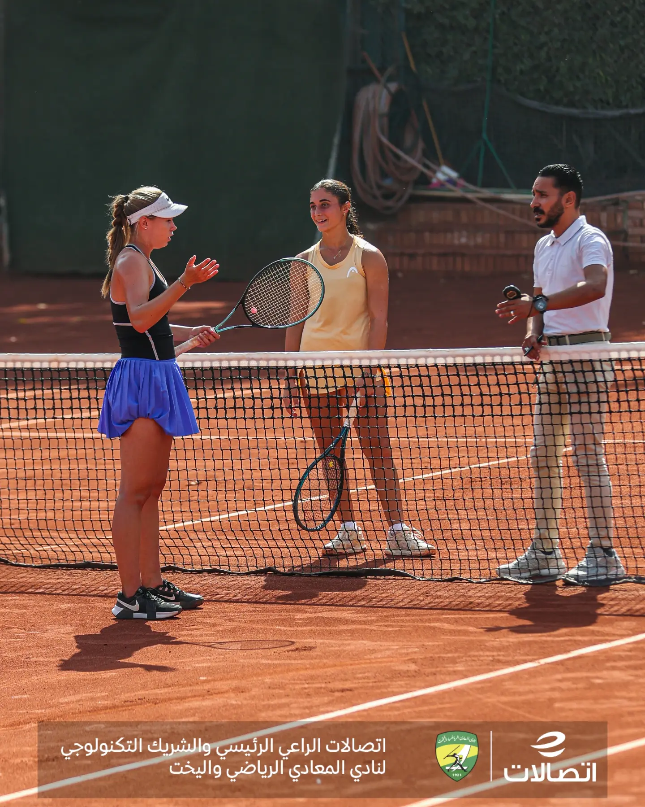
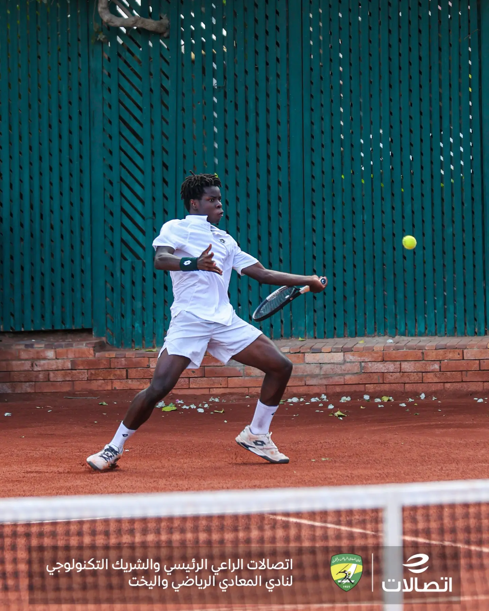
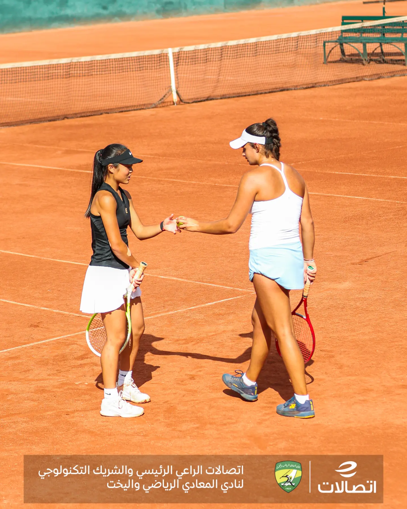
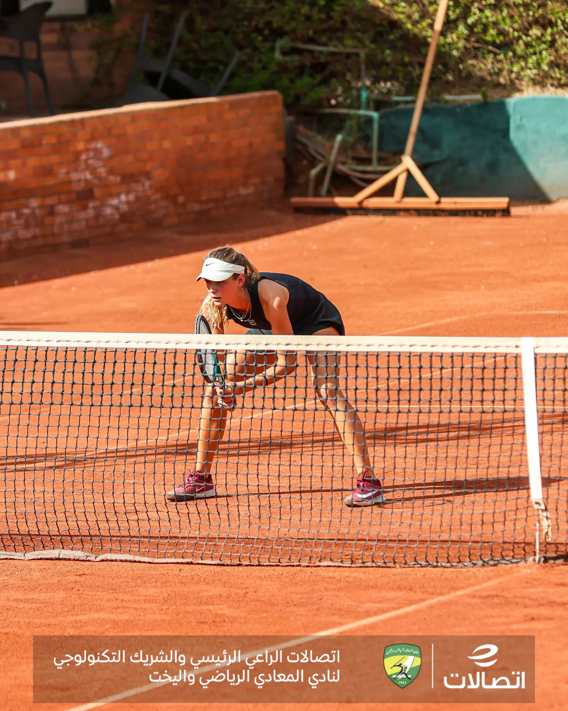
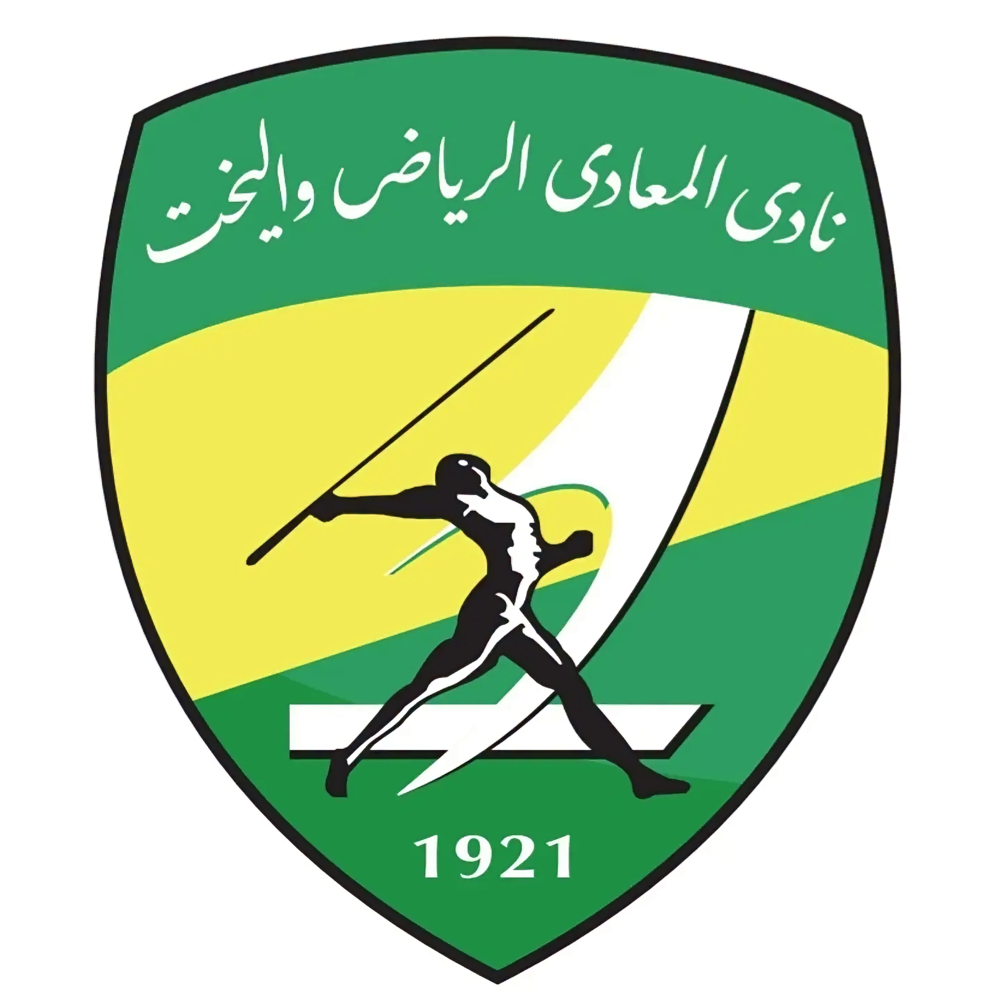

Organizers & tournament team
For the planning, coordination, long days, quick decisions, and countless details handled behind the scenes. Your commitment gave the tournament its rhythm.

A moment to remember · 2026
To everyone who made our ITF J200 tournament in Maadi more than a competition — thank you.
Read our message↓More than a tournament
As the final points are played and our time together at the ITF J200 in Maadi comes to a close, we find ourselves looking back with grateful hearts.
Over these days, the courts held more than matches. They held courage under pressure, friendships across borders, hard-earned lessons, unforgettable rallies, and the kind of moments that stay with us long after the last ball has landed.
To every player who competed here: thank you for bringing your talent, determination, respect, and spirit to Maadi Club. You made this tournament what it was.
Wherever the next step takes you, we hope you carry a little piece of Maadi with you. Our courts will remember you — and our doors will be open when your journey brings you back.


We’ll be cheering you on. Play bravely, compete with heart, enjoy every moment, and make the most of this next opportunity. You’ve earned your place on the journey — now go make it count.
A tournament is never a solo effort
Behind every smooth match day is a team of people making a hundred small things happen. This tournament carries your effort in every detail.
For the planning, coordination, long days, quick decisions, and countless details handled behind the scenes. Your commitment gave the tournament its rhythm.
For your focus, fairness, professionalism, and steady presence under pressure. Thank you for protecting the integrity of the game and helping every match run with respect.
For your trust, support, facilities, and hospitality. Thank you for helping create an environment where players could compete, recover, and feel welcome.
For every early start, helpful answer, behind-the-scenes task, and kind gesture. Your work may not always be seen, but it is felt throughout the tournament.
Care beyond the court
Great tennis deserves a great experience. We’re grateful to every person and team who helped make the players’ time in Maadi more comfortable, connected, and supported.
A digital home for tournament information, helping players and supporters stay connected.
Keeping everyone close to the action, point by point, wherever they were following from.
Bringing matches closer to families, friends, and fans who couldn’t be courtside.
Helping players get their equipment ready and return to court with confidence.
Space to prepare, recover, reset, and look after the athlete beyond the match.
Thoughtful support that helped make busy competition days a little easier.
Thank you to everyone who made these services possible — and to everyone who used them, trusted them, and helped make this tournament feel like a community.
A few moments. A thousand memories.
From the first warm-up to the final handshake, the best part of a tournament is everything we share along the way.




The story isn't over
UNTIL WE MEET AGAIN
Maadi will be here. The courts will be ready. And we hope to see familiar faces, welcome new ones, and make another set of memories together.
Until then, keep playing, keep growing, and keep showing the world what you’re capable of.
Carry the memories with you ↑